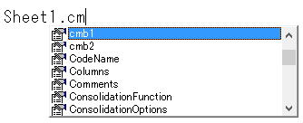

オセロを作りながらマクロVBAを学ぼう№12
ExcelマクロVBAでオセロ（リバーシ）を作っていきながらマクロVBAを学ぶ第12回です。
オセロソフトとしては、そこそこの強さになりました。
ＰＣ対ＰＣを何十回と対戦させる機能を実装して、
実際に、どの程度強さに違いがあるのかを検証します。
もちろん、結果の記録も必要になります。
・終了メッセージを表示しない。
PC対PCの場合は、パスのメッセージは既に表示していません。
・1試合が終わってもマクロを終了させない。
・対戦結果を記録する。
Sub 対戦シミュレーション()
Dim i1 As Long
Dim i2 As Long
Dim i3 As Long
Dim ary
Sheet1.Unprotect
Set TargetSheet = Sheet1
StopMsg = True
ary = Array("ＰＣ１", "ＰＣ２", "ＰＣ３", "ＰＣ４",
"ＰＣ５")
With Worksheets("対戦履歴")
.Range("A1").CurrentRegion.Offset(1).ClearContents
For i1 = 0 To 4
For i2 = 0 To 4
If ary(i1) <> ary(i2) Then
Sheet1.cmb1.Text = ary(i1)
Sheet1.cmb2.Text = ary(i2)
For i3 = 1 To 100
DoEvents
Application.Calculation = xlCalculationManual
Call 対戦開始
Call 対戦履歴追加
DoEvents
Application.Calculation = xlCalculationAutomatic
Next
End If
Next
Next
End With
Sheet1.Protect
MsgBox "終了"
End Sub
ary = Array("ＰＣ１", "ＰＣ２", "ＰＣ３", "ＰＣ４", "ＰＣ５")
Array関数を使って、1行で済ませています。
For i1 = 0 To 4
For i2 = 0 To 4
If ary(i1) <> ary(i2) Then
これで総当り、かつ、同じＰＣは対戦しないようにしています。
この100が同じ組み合わせで戦う試合数になります。
StopMsgがTrueの場合は、メッセージを出さないようにします。
Option Explicit
Declare PtrSafe Sub Sleep Lib "kernel32" (ByVal dwMilliseconds As Long)
Public TargetSheet As Worksheet
Public 置く石 As Range
Public 相手石 As Range
Public isPCvsPC As Boolean
Public StopMsg As Boolean
Sub 対戦開始()
With TargetSheet
If Not StopMsg Then
If WorksheetFunction.CountA(.Range("盤面")) > 4 Then
If MsgBox("対局途中です。" & vbLf & vbLf & _
"新規対局を開始してもよろしいですか？", _
vbYesNo, "確認") = vbNo Then
Exit Sub
End If
End If
End If
If Sheet1.cmb1.Text Like "ＰＣ*" And Sheet1.cmb2.Text Like "ＰＣ*" Then
isPCvsPC = True
Else
isPCvsPC = False
End If
.Range("先番石").Copy Destination:=.Range("手番石")
.Range("手番石").Offset(, 1) = "の番です。"
.Range("盤面").ClearContents
Call 共通変数設定
Call 石を置く(.Range("盤面").Cells(4, 5), 置く石)
Call 石を置く(.Range("盤面").Cells(5, 4), 置く石)
Call 石を置く(.Range("盤面").Cells(4, 4), 相手石)
Call 石を置く(.Range("盤面").Cells(5, 5), 相手石)
Call 置ける場所表示
If isPC Then
Call 次手着手(次手候補)
End If
End With
End Sub
Sub 終局処理()
If StopMsg Then Exit Sub
With TargetSheet
Select Case True
Case .Range("先番石").Offset(, 2).Value > .Range("後番石").Offset(, 2).Value
MsgBox "終局" & vbLf & vbLf & "●先手番「" & Sheet1.cmb1.Text & "」の勝ちです。"
Case .Range("先番石").Offset(, 2).Value < .Range("後番石").Offset(, 2).Value
MsgBox "終局" & vbLf & vbLf & "○後手番「" & Sheet1.cmb2.Text & "」の勝ちです。"
Case Else
MsgBox "終局" & vbLf & vbLf & "引き分けです。"
End Select
.Range("手番石").Clear
.Range("手番石").Offset(, 1).ClearContents
End With
End Sub
赤太字の部分が追加された場所です。
End
これで、マクロそのものを終了させていましたが、
対戦を続けるために、マクロは終了しないようにします。
Function 終局確認() As Boolean
Dim myRng As Range
Dim isPass As Boolean
With TargetSheet
If WorksheetFunction.CountA(.Range("盤面")) = 64 Then
Call 終局処理
終局確認 = True
Exit Function
End If
isPass = True
For Each myRng In .Range("盤面")
If is置ける全方向(myRng, True) Then
isPass = False
End If
Next
If isPass = True Then
isPass = True
Set 置く石 = 相手石
For Each myRng In .Range("盤面")
If is置ける全方向(myRng, True) Then
isPass = False
End If
Next
If isPass = True Then
Call 終局処理
終局確認 = True
Exit Function
End If
End If
End With
Call 共通変数設定
End Function
Sub 次手着手(ByVal Target As Range)
Dim myRng As Range
Call 共通変数設定
If is置ける全方向(Target, False) Then
Call 手番交代
Call 置ける場所表示
If 終局確認 Then Exit Sub
Call パス確認
If isPC Then
If Not isPCvsPC Then
Sleep 400
End If
Call 次手着手(次手候補)
End If
End If
End Sub
赤太字の部分が追加された場所です。
次手着手で、終局確認がTrueなら、Exit Subすることで、マクロを継続させています。
シート「対戦結果」を作ります。
次回には作成する予定なので、シートには前もって入れておきました。
I3セルには、
=COUNTIFS($A:$A,$G3,$B:$B,I$2,$E:$E,"黒")
I4セルには、
=COUNTIFS($A:$A,$G4,$B:$B,I$2,$E:$E,"白")
G4セルは空白に見えますが、「ＰＣ１」が入っています。
表示形式のユーザー定義で、「;;;」として、表示を消しています。
表示形式のユーザー定義は、
正の数の書式;負の数の書式;ゼロの書式;文字列の書式
つまり、正:負;ゼロ;文字、全て省略しているので、何も表示されないことになります。
他のＰＣ部分には、コピペで数式を設定できます。
上部の結果を=でとってきているだけです。
Sub 対戦履歴追加()
Dim j As Long
With Worksheets("対戦履歴")
j = .Cells(.Rows.Count, 1).End(xlUp).Row + 1
.Cells(j, 1) = Sheet1.cmb1.Text
.Cells(j, 2) = Sheet1.cmb2.Text
.Cells(j, 3) = Sheet1.Range("先番石").Offset(, 2)
.Cells(j, 4) = Sheet1.Range("後番石").Offset(, 2)
If .Cells(j, 3) > .Cells(j, 4) Then
.Cells(j, 5) = "黒"
End If
If .Cells(j, 3) < .Cells(j, 4) Then
.Cells(j, 5) = "白"
End If
End With
End Sub
シート「対戦履歴」にの最終行の次の行に出力しています。
勝敗については、シート「オセロ」にあるので、
シートのオブジェクト名である、Sheet1を使って取得くしています。
オブジェクト名を使う理由としては、
cmb1やcmb2の値を取得するコード記述が簡単になることです。

このように、インテリセンスも効きます。
上段が先手勝ち、下段が後手勝ちです。
ＰＣ１から順に強くなっています。
というか、そのように評価値のポイントを調整した結果ではあります。
偶然の要素もあるので、細かい数値の違いはともかくとして、
全体的に先手が優位な状況にあるようです。
これは一般的に、オセロに置いて先手が優位という事ではなく、
今回のソフトのロジック特有のものだと思います。
強さを判定できるという事は、
いろいろなパターンで作成していく上で、
対戦させることでより強いソフトになっているかどうかを判定できるという事です。
さらに強くしていこうと思います。
少なくとも、ＰＣ５に完全に勝ち越せるＰＣ６を作ろうと思います。
全体の目次
ここまでのサンプルファイルのダウンロード
新着記事NEW ・・・新着記事一覧を見る
VBA100本ノック 100本目：WEBから100本ノックのリストを取得｜VBA練習問題（3月3日）
VBA100本ノック 99本目：自動席替え（行列と前後左右が全て違うように）｜VBA練習問題（3月2日）
VBA100本ノック 98本目：席替えルールが守られているか確認｜VBA練習問題（3月1日）
VBA100本ノック 97本目：Accessデータを取得（グループ集計）｜VBA練習問題（2月27日）
VBA100本ノック 96本目：Accessデータを取得（マスタ結合&抽出）｜VBA練習問題（2月26日）
VBA100本ノック 95本目：図形のテキストを検索するフォーム作成｜VBA練習問題（2月24日）
VBA100本ノック 94本目：表範囲からHTMLのtableタグを作成｜VBA練習問題（2月23日）
VBA100本ノック 93本目：複数ブックを連結して再分割｜VBA練習問題（2月22日）
VBA100本ノック 92本目：セルの色を16進で返す関数｜VBA練習問題（2月20日）
VBA100本ノック 91本目：時間計算（残業時間の月間合計）｜VBA練習問題（2月19日）
アクセスランキング ・・・ ランキング一覧を見る
1.最終行の取得（End,Rows.Count）｜VBA入門
2.RangeとCellsの使い方｜VBA入門
3.変数宣言のDimとデータ型｜VBA入門
4.マクロって何？VBAって何？｜VBA入門
5.Range以外の指定方法（Cells,Rows,Columns）｜VBA入門
6.セルのコピー&値の貼り付け（PasteSpecial）｜VBA入門
7.繰り返し処理（For Next)｜VBA入門
8.セルに文字を入れるとは（Range,Value）｜VBA入門
9.マクロはどこに書くの（VBEの起動）｜VBA入門
10.とにかく書いてみよう（Sub,End Sub）｜VBA入門
- ホーム
- マクロVBA応用編
- マクロVBAサンプル集
- オセロを作りながらマクロVBAを学ぼう№12
このサイトがお役に立ちましたら「シェア」「Bookmark」をお願いいたします。
記述には細心の注意をしたつもりですが、
間違いやご指摘がありましたら、「お問い合わせ」からお知らせいただけると幸いです。
掲載のVBAコードは動作を保証するものではなく、あくまでVBA学習のサンプルとして掲載しています。
掲載のVBAコードは自己責任でご使用ください。万一データ破損等の損害が発生しても責任は負いません。